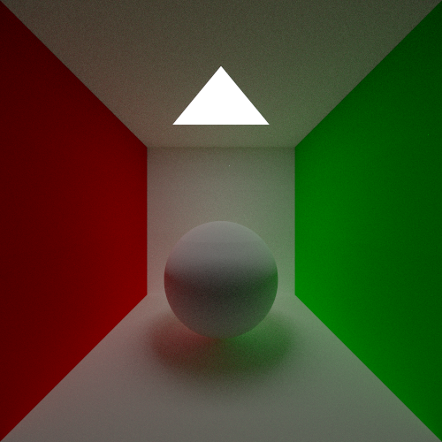

簡易画像加工ソフト

CGレンダラー
私は、漫画に使えるテクノロジーに興味があり、これまで、基本的な2D画像処理や、写実的なCGのレンダリング技術について勉強をしてきました。
その過程で、上記の簡易的な画像加工ソフトやCGレンダラーを作りました。
この画像加工ソフトはグレースケールのみ対応していて、ぼかしや輪郭検出、閾値処理、鮮鋭化やディザリングなどが行えます。
CGレンダラーでは素材は完全拡散反射と完全鏡面反射、形状は球体、面、三角形を設定できます。現在勉強しながら開発を進めているものです。
この二つを勉強してきた理由としては、画像処理については実際の写真を加工し背景として使う技術に興味があったためです。写実的なCG技術については、 この技術の応用例としてPhysically-based Feature Line Renderingという漫画に使えるような技術を知ったためです。
また、趣味でWeb制作を勉強していたことがあり、React、Vue、Flask、Firebaseの使用経験があります。